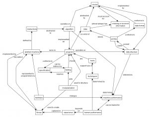

Concept Map
While re-designing the Software Carpentry course, I have realized that we rely over and over again on some underyling concepts that are hard to capture as lecture topics. I think these concepts are the heart of any useful definition of "computational thinking". The diagram below is a first attempt to capture what these concepts are and how they're related. (The list below the diagram summarizes the relationships in textual form for easier reading.) Suggestions for improvements would be very welcome…

| A model | is implemented as a | data structure |
| A model | must account for | missing or incomplete information |
| A data format | conforms to a | model |
| Instructions | for a computer are abstracted as an | algorithm |
| An algorithm | operates on a | model |
| Choice of algorithm | determines | machine performance |
| Data | is abstracted as a | model |
| Data | almost always has | missing or incomplete information |
| An archive | stores | data |
| An archive | conforms to a | data format |
| An archive | is parsed to create | a data structure |
| An abstract machine | is implemented by | a library |
| A program | is a kind of | data |
| A program | operates on | a data structure |
| A program | conforms to | a specification |
| A data structure | is persisted to create | an archive |
| Data structure | choice helps determine | machine performance |
| A specification | can be defined by | testing |
| Testing | checks | a program |
| Testing | requires | a specification |
| Tools | are | programs |
| Tools | support use of | software development techniques |
| Software development techniques | support use of | tools |
| Modularization | is used to structure | programs |
| Modularization | aids | testing |
| Modularization | is used to create | a library |
| Hardware | is represented to programmers by | an abstract machine |
| Hardware | architecture changes | machine performance |
| Machine performance | can be traded off against | human performance |
| A library | can extend | an abstract machine |
| Experience | is captured in | a library |
| Human performance | is determined by | software development techniques |
| Human performance | can be traded off against | machine performance |
| Human performance | depends on | experience |